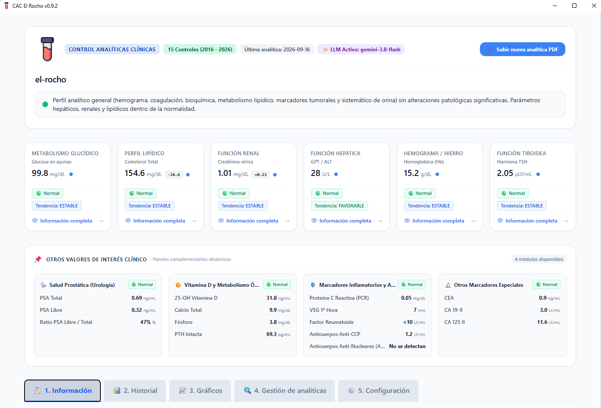
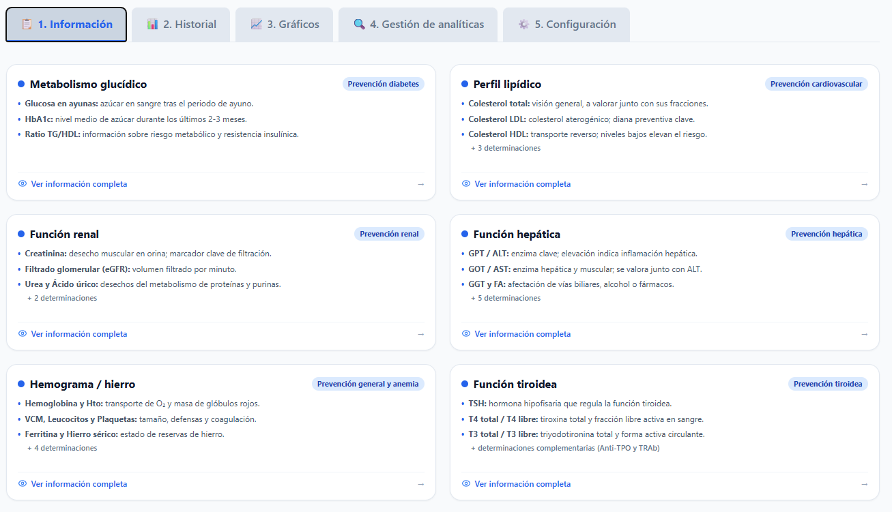
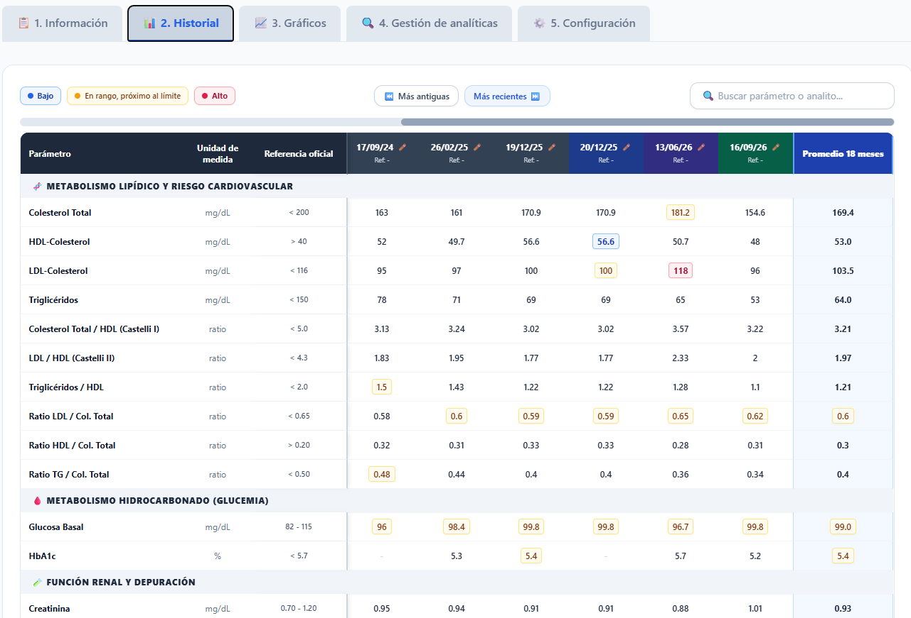
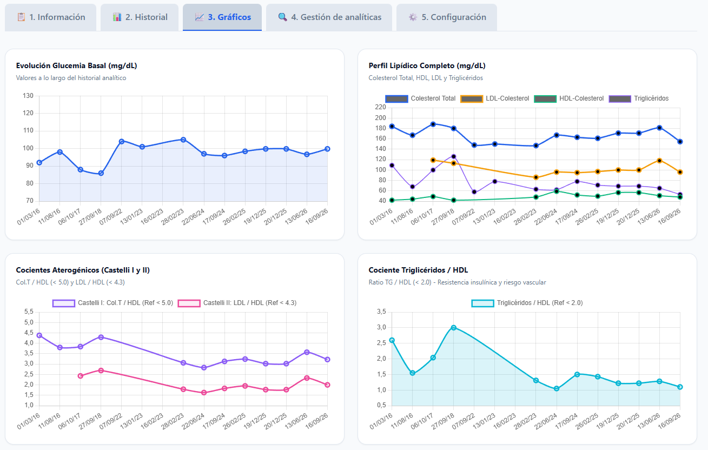
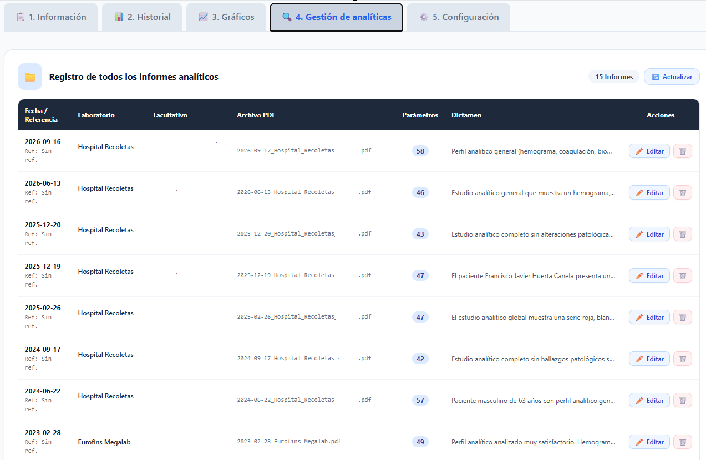
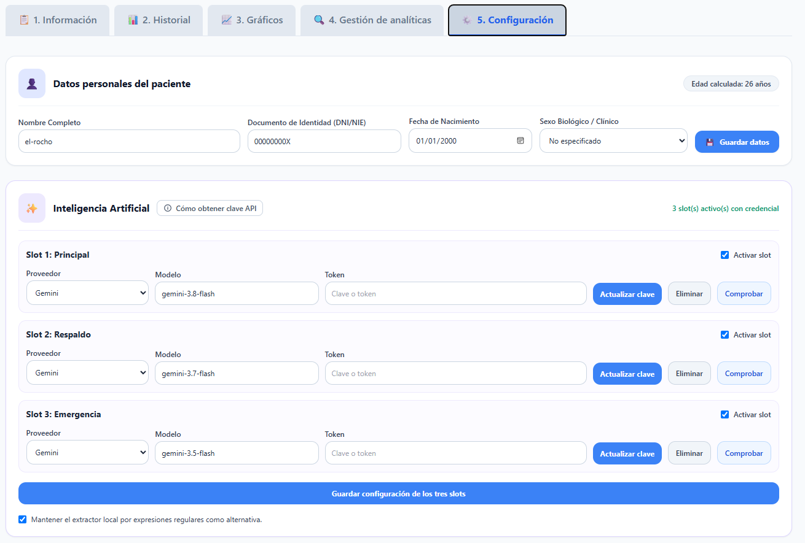

Importación de PDFs
Lee y normaliza los datos de los informes, con una revisión previa antes de incorporarlos al historial.
Una aplicación gratuita y de código abierto para organizar informes de laboratorio, seguir su evolución y consultar los resultados desde tu propio equipo.
Control de Analíticas Clínicas digitaliza los informes en PDF, guarda el historial localmente y presenta los parámetros relevantes de forma comprensible. Puede extraer datos con un motor local o, de forma opcional, con Google Gemini usando tu propia clave API.
Lee y normaliza los datos de los informes, con una revisión previa antes de incorporarlos al historial.
Visualiza indicadores, tendencias y gráficos para consultar la evolución de tus analíticas con el tiempo.
Los informes y los datos se almacenan en tu dispositivo. No hace falta crear una cuenta ni usar una nube.

Panel principal de la aplicación.
Accede de forma ordenada a la información clínica, el histórico de resultados, las gráficas y la gestión de tus informes.





Descarga el instalador de la última versión publicada. No requiere Docker y conserva tus datos clínicos fuera de la carpeta de la aplicación.
Descargar para WindowsLa imagen más reciente está disponible en GitHub Container Registry. Puedes ejecutarla con docker pull ghcr.io/el-rocho/cac-elrocho:latest o consultar sus versiones publicadas.